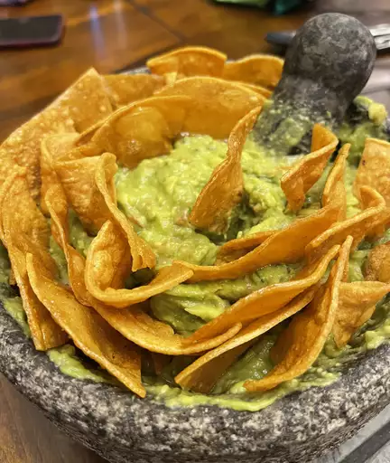

Guacamole Recipe

Description
A guacamole recipe with tasty kick from
cayenne and cilantro. You can serve it smooth or chunky
depending on your tastes.
Ingredients
- Avocados
- Lime
- Salt
- Vegetables
- Herbs and spices
- Tortilla Chips
Directions
Mash up avocados It couldn't be easier to make
restaurant-worthy guac at home: Simply mix all the ingredients together!
That's it. You'll find the step-by-step recipe below.
Home